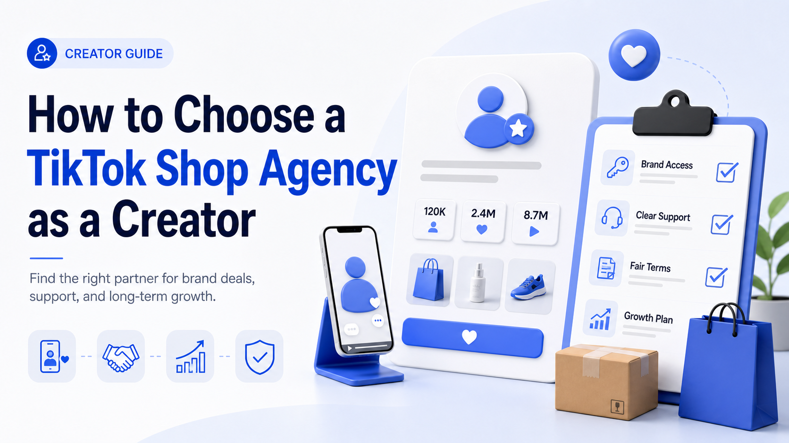

WE Marketing · WEM Blog
How to Choose a TikTok Shop Agency as a Creator

Not all TikTok Shop agencies treat creators the same. Here's what to look for, what to avoid, and how the right agency partnership can grow your affiliate income.
- TikTok Shop agency strategy
- Creator affiliate and UGC operations
- Product page, content, and conversion guidance
WE Marketing / WEM 发布 TikTok Shop 代运营、达人联盟、UGC、直播和商品页转化相关实战内容。
Back to WE Marketing blog